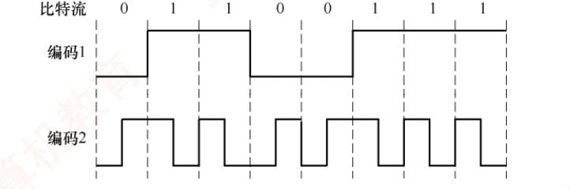

信
第十卷第42话
物理层
奈氏与香农、编码与调制、介质、中继器与集线器
真题火力｜2009–2025 这一话的考点出现 13 题，覆盖 13/17 年空白 = 没考 · 网点 = 1 题 · 黑 = 2 题 · 红 = 3 题及以上（由题库逐题统计）
09
10
11
12
13
14
15
16
17
18
19
20
21
22
23
24
25
物理层最薄，两个公式 + 几张波形图。三句口诀：给状态数用奈氏，给信噪比用香农，都给了取最小。
01基本概念
码元：一个固定时长的信号单位。波特率：每秒多少个码元。比特率：每秒多少比特。一个码元有 V 种状态时，携带 log₂V 比特。
术式
两个母公式
奈氏（无噪声）：C = 2W · log₂V（b/s）。W 是带宽（Hz），V 是状态数。
香农（有噪声）：C = W · log₂(1 + S/N)（b/s）。
分贝换算：dB = 10·log₁₀(S/N)。30 dB → S/N = 1000；log₂1001 ≈ 10。
波特率 ≤ 2W。比特率 = 波特率 × log₂V。
束缚
三句话
给 V：奈氏。给 S/N：香农。都给：分别算，取小的。
2009实战奈氏准则 · QAM
在无噪声的情况下，若某个通信链路的带宽为 3kHz，采用 4 个相位、每个相位具有 4 种幅度的 QAM 调制技术，则该通信链路的最大数据传输速率是（ ）。
import math
V=4*4
print("V =",V,"; n = log2V =",math.log2(V))
print("C = 2*3000*log2(16) =",2*3000*math.log2(V),"b/s")采用 4 个相位，每个相位有 4 种幅度的 QAM 调制，共有 16 种信号状态，每个码元可携带 log₂16＝4 比特信息。根据奈奎斯特定理，最大传输速率为 2W×log₂V＝2×3k×4＝24kb/s。
V = 4×4 = 16，C = 2×3k×4 = 24 kb/s。
再深一层
选 B。「无噪声」三个字直接指定用奈氏，QAM 的两个参数要先相乘：
📌 QAM 的状态数是"相位数 × 幅度数"，不是相加——这正是书上 QAM 公式 R = B·log₂(m×n) 里那个乘号。干扰项 A 12k 就是把 2W 写成了 W；C 48k 是把 V 当成了 32（4+4 又×4？）；D 96k 是 V=256。
📌 本题与 2023 真题（本节第 16 题）是一对：2009 给 QAM 求速率，2023 给速率反求 QAM 阶数。同一个公式的正反两问，十四年考了两次。
状态数 V = 相位数 × 每相位幅度数 = 4 × 4 = 16 每码元比特 n = log₂16 = 4 C = 2W·n = 2 × 3k × 4 = 24 kb/s🐍 复算：2×3000×log₂16 = 24000 ✅
📌 QAM 的状态数是"相位数 × 幅度数"，不是相加——这正是书上 QAM 公式 R = B·log₂(m×n) 里那个乘号。干扰项 A 12k 就是把 2W 写成了 W；C 48k 是把 V 当成了 32（4+4 又×4？）；D 96k 是 V=256。
📌 本题与 2023 真题（本节第 16 题）是一对：2009 给 QAM 求速率，2023 给速率反求 QAM 阶数。同一个公式的正反两问，十四年考了两次。
2011实战波特率与比特率
若某个通信链路的数据传输速率为 2400b/s，采用 4 个相位调制，则该链路的波特率是（ ）。
波特率（B）与数据传输速率（C）的关系为 C＝B×log₂V，其中 V 为码元可取的离散值个数。采用 4 种相位调制，即 V＝4，每个码元携带 log₂V＝log₂4＝2 比特信息。因此，波特率＝数据传输速率/每个码元所含的比特数＝2400/2＝1200 波特。
2400 / log₂4 = 1200。
再深一层
选 B。反解型：给比特率、求波特率，除以 log₂V。
📌 干扰项 A 600 = 2400÷4（除了 V 而不是 log₂V） —— 这是本类题唯一的高频错法，务必记住"除的是 log₂V"。C 4800、D 9600 是把除写成了乘。
📌 "4 个相位调制"＝PSK 的 4 种相位＝4 种状态。若题干说"4 个相位、每相位 2 种幅度"（QAM），V 就是 8 而不是 4——看清楚是只调相位，还是相位和幅度一起调。
🔗 本节第 5 题（习题 07）是同一公式的第三种问法（求 V），三题合起来把 C = B·log₂V 三个量各求了一遍。
V = 4（4 个相位）⟹ n = log₂4 = 2 B = C ÷ n = 2400 ÷ 2 = 1200 Baud🐍 复算：2400 ÷ log₂4 = 1200.0 ✅
📌 干扰项 A 600 = 2400÷4（除了 V 而不是 log₂V） —— 这是本类题唯一的高频错法，务必记住"除的是 log₂V"。C 4800、D 9600 是把除写成了乘。
📌 "4 个相位调制"＝PSK 的 4 种相位＝4 种状态。若题干说"4 个相位、每相位 2 种幅度"（QAM），V 就是 8 而不是 4——看清楚是只调相位，还是相位和幅度一起调。
🔗 本节第 5 题（习题 07）是同一公式的第三种问法（求 V），三题合起来把 C = B·log₂V 三个量各求了一遍。
2016实战香农定理 · 分贝换算 · 百分比
若连接 R2 和 R3 链路的频带宽度为 8kHz，信噪比为 30dB，该链路实际数据传输速率约为理论最大数据传输速率的 50%，则该链路的实际数据传输速率约为（ ）。
import math
snr=10**3
th=8000*math.log2(1+snr)
print("30dB ⟹ S/N =",snr)
print("理论极限 =",round(th,1),"b/s ≈ 80kb/s")
print("实际 50% =",round(th*0.5,1),"b/s ≈ 40kb/s")
print("log2(1001) =",round(math.log2(1001),4),"≈10 (因 2**10=1024)")采用分贝（dB）记法时，信噪比＝10log₁₀(S/N)＝30，解得 S/N＝1000。由香农定理可知，理论极限速率＝W×log₂(1+S/N)＝8k×log₂(1+1000)。由于 2¹⁰＝1024≈1001，故 log₂(1001)≈10，理论速率≈8×10＝80kb/s。实际速率为理论值的 50%，即 80×50%＝40kb/s。
香农：8k × log₂1001 ≈ 80 kb/s，50% → 40 kb/s。
再深一层
选 C。三步题，每步都有一个干扰项在等你：
📌 干扰项溯源：D 80k＝漏掉了最后那个 50%（本题最主要的失分方式）；A 8k＝只写了带宽；B 20k＝把 log₂1001 估成了 5。
📌 「2¹⁰ = 1024 ≈ 1001 ⟹ log₂1001 ≈ 10」这个近似是考场必备——没有计算器，就靠这个把 log₂ 消掉。同族近似：2²⁰ ≈ 10⁶ ⟹ log₂(10⁶) ≈ 20（40dB 时 log₂10001 ≈ 13.3，书上按 13 估）。
📌 题干那句"R2 和 R3 链路"和配图都是背景，本题与拓扑无关，不要被图带偏去找路径瓶颈（那是 ch1 2024 真题的套路）。
① 30dB ⟹ S/N = 10³ = 1000 ② 香农：C = 8k × log₂1001 ≈ 8k×10 = 80 kb/s ← 干扰项 D 停在这 ③ ×50% ⟹ 40 kb/s🐍 复算：8000×log₂1001 = 79737.4 b/s，×50% = 39868.7 ≈ 40kb/s ✅
📌 干扰项溯源：D 80k＝漏掉了最后那个 50%（本题最主要的失分方式）；A 8k＝只写了带宽；B 20k＝把 log₂1001 估成了 5。
📌 「2¹⁰ = 1024 ≈ 1001 ⟹ log₂1001 ≈ 10」这个近似是考场必备——没有计算器，就靠这个把 log₂ 消掉。同族近似：2²⁰ ≈ 10⁶ ⟹ log₂(10⁶) ≈ 20（40dB 时 log₂10001 ≈ 13.3，书上按 13 估）。
📌 题干那句"R2 和 R3 链路"和配图都是背景，本题与拓扑无关，不要被图带偏去找路径瓶颈（那是 ch1 2024 真题的套路）。
2017实战奈氏与香农对比 · 反解V
若信道在无噪声情况下的极限数据传输速率不小于信噪比为 30dB 条件下的极限数据传输速率，则信号状态数至少是（ ）。
import math
rhs=math.log2(1+10**3)
print("香农侧 log2(1001) =",round(rhs,4))
print("需要 2*log2(V) >= ",round(rhs,4)," ⟹ log2(V) >=",round(rhs/2,4))
print("V >=",round(2**(rhs/2),2)," ⟹ 取2的幂 ⟹ 32")
print("检验 V=16: 2*log2(16)=",2*math.log2(16),"< ",round(rhs,4),"⟹ 不够")设信号状态数为 V。无噪声信道的极限速率（奈奎斯特定理）为 2Wlog₂V；有噪声信道的极限速率（香农定理）为 Wlog₂(1+S/N)。已知信噪比为 30dB，可得 S/N＝1000，要求：2Wlog₂V ≥ Wlog₂(1001)≈W×10，化简得 log₂V ≥ 5，求得 V ≥ 32。因此，信号状态数至少是 32。
2W·log₂V ≥ W·log₂1001 ≈ 10W，log₂V ≥ 5，V ≥ 32。
再深一层
选 D。⭐⭐ 本题是两个定理的"正面对撞"，也是本章最高阶的一问：
⭐ 解本题的关键动作是"约掉 W"：题干没给带宽，很多人会卡在这里以为条件不全——其实两个公式里都有 W，一比就没了。凡是"两个极限速率作比较"的题，带宽一定会约掉，不必去找它。
📌 本题与本节第 12 题（习题 17）的区别：那题是取 min 求速率，本题是令两者相等反求 V——同一对公式的两种玩法。
🔗 2.4 疑难点 3 就是本题的文字版："奈氏仅考虑带宽、香农同时考虑带宽和信噪比"，建议对照着看。
奈氏（无噪声）：C₁ = 2W·log₂V 香农（30dB） ：C₂ = W·log₂(1+1000) ≈ W×10 要求 C₁ ≥ C₂ ： 2W·log₂V ≥ 10W 两边的 W 同时约掉 ⟹ log₂V ≥ 5 ⟹ V ≥ 2⁵ = 32🐍 精确复算：log₂V ≥ log₂(1001)/2 = 4.9836 ⟹ V ≥ 31.64 ⟹ 取 2 的幂 ⟹ 32 ✅（选项里 16 < 31.64，确实不够）
⭐ 解本题的关键动作是"约掉 W"：题干没给带宽，很多人会卡在这里以为条件不全——其实两个公式里都有 W，一比就没了。凡是"两个极限速率作比较"的题，带宽一定会约掉，不必去找它。
📌 本题与本节第 12 题（习题 17）的区别：那题是取 min 求速率，本题是令两者相等反求 V——同一对公式的两种玩法。
🔗 2.4 疑难点 3 就是本题的文字版："奈氏仅考虑带宽、香农同时考虑带宽和信噪比"，建议对照着看。
2014实战影响传输速率的因素 · 传播速度vs传输速率
在下列因素中，不影响信道数据传输速率的是（ ）。
由香农定理可知，信道极限数据传输速率受信噪比和频带宽度限制；调制速率（波特率）也直接影响数据速率。而信号传播速率仅决定传播时延，与传输速率无关，不影响信道数据传输速率。
传播速度影响时延，不影响速率。
再深一层
选 D。⭐ 「传播速度」与「传输速率」是网络全书最容易混的一对词：
📌 一句话：传输速率是"水管有多粗"，传播速度是"水流有多快"。把水管加粗（提带宽）不会让水流得更快。
📌 A/B 来自香农，C 来自奈氏——三个干扰项恰好覆盖了本节两个定理的全部自变量，说明命题人就是在考"你知不知道公式里有哪些量"。
🔗 串联 ch1：ch1 1.1.6 里"时延 = 发送时延 + 传播时延 + 排队时延 + 处理时延"，本题这两个量分别喂给前两项。ch1 2023 真题"时延带宽积 1000b 反求传播时延"用的就是这个分工。
| 传输速率（发送速率） | 传播速度 | |
|---|---|---|
| 是什么 | 每秒往链路上推多少比特 | 信号在介质中跑多快 |
| 单位 | b/s | m/s（铜/光纤约 2×10⁸） |
| 决定谁 | 发送时延 = 数据量 ÷ 速率 | 传播时延 = 距离 ÷ 速度 |
| 由什么定 | 带宽、信噪比、调制方式 | 只由介质决定，与带宽无关 |
📌 A/B 来自香农，C 来自奈氏——三个干扰项恰好覆盖了本节两个定理的全部自变量，说明命题人就是在考"你知不知道公式里有哪些量"。
🔗 串联 ch1：ch1 1.1.6 里"时延 = 发送时延 + 传播时延 + 排队时延 + 处理时延"，本题这两个量分别喂给前两项。ch1 2023 真题"时延带宽积 1000b 反求传播时延"用的就是这个分工。
02编码与调制
编码：数字→数字（基带）。调制：数字→模拟（频带）。
术式
五种编码
NRZ：不归零。无法同步。NRZI：跳变表示 0（USB）。曼彻斯特：中间跳变，自同步；以太网用。差分曼彻斯特：比特开始处跳变表示 0。
调制：调幅 AM、调频 FM、调相 PM、QAM（幅度 + 相位组合）。
2013实战曼彻斯特编码 · 10Base-T
下图为 10Base-T 网卡接收到的信号波形，则该网卡收到的比特串是（ ）。
10Base-T 网卡接收到的信号波形
10Base-T 以太网采用曼彻斯特编码：每个码元中间有一次跳变，从低到高表示 0，从高到低表示 1（或采用相反的约定，但要保持一致）。图示波形对应的比特串可为 0011 0110 或 1100 1001。
10Base-T 用曼彻斯特。
再深一层
选 A。本题比习题版多了一个信息量：题干没说"曼彻斯特"，说的是"10Base-T"。
📌 两条"编码 ↔ 网络"的对应必须记死：
🐍 逐像素解码结果与习题 08 完全一致（同一张图）：0011 0110 ✅
🔗 10Base-T 里的 T 是 Twisted pair（双绞线），10 表示 10Mb/s、Base 表示基带传输——"Base"这三个字母正好呼应 2.1.1 的基带传输，第 3 章会详细讲这套命名。
10Base-T ＝ 传统以太网 ⟹ 采用曼彻斯特编码 （正文原话：传统以太网采用的就是曼彻斯特编码， 而差分曼彻斯特编码常用于令牌环网）⭐ 这是本节唯一需要"从设备名推编码方式"的一步，也是本题真正的门槛：不知道 10Base-T 用曼彻斯特，就不知道该看中间还是看起始，图读了也白读。
📌 两条"编码 ↔ 网络"的对应必须记死：
| 网络 | 编码 |
|---|---|
| 传统以太网（10Base-T） | 曼彻斯特编码 |
| 令牌环网 | 差分曼彻斯特编码 |
| USB 2.0 | NRZI（反向非归零） |
🔗 10Base-T 里的 T 是 Twisted pair（双绞线），10 表示 10Mb/s、Base 表示基带传输——"Base"这三个字母正好呼应 2.1.1 的基带传输，第 3 章会详细讲这套命名。
2015实战NRZ · 曼彻斯特编码 · 读波形
使用两种编码方案对比特流 01100111 进行编码的结果如下图所示，编码 1 和编码 2 分别是（ ）。

对比特流 01100111 的两种编码结果
编码 1 是典型的 NRZ 编码：高电平表示 1，低电平表示 0，无跳变。编码 2 在每个比特周期中间均有跳变，高-低表示 1，低-高表示 0，符合曼彻斯特编码特征。差分曼彻斯特编码在比特周期起始处有跳变表示 0，无跳变表示 1，与图不符。因此，编码 1 和编码 2 分别为 NRZ 编码和曼彻斯特编码。
再深一层
选 A。⭐ 本题是"给了明文比特流"的送分型读图题，做法与前两题相反：不是从波形推比特，而是拿已知比特串 01100111 去反向验证每种编码的特征。🐍 逐像素解码验证：
编码1：电平序列 L H H L L H H H（每比特一段） 与 0 1 1 0 0 1 1 1 一一对应，比特内无任何跳变 ⟹ NRZ ✅ 编码2：每比特中间都有跳变，方向依次为 ↑↓↓↑↑↓↓↓ 与 0 1 1 0 0 1 1 1 对齐 ⟹ ↑=0、↓=1 ⟹ 曼彻斯特 ✅🔑 四选项的排除只需两刀：
第一刀（看编码1）： 波形与比特串直接一一对应、比特内无跳变 ⟹ NRZ 若是 NRZI，应是"遇 0 跳变、遇 1 不变"，与比特串对不上 ⟹ 砍 C、D 第二刀（看编码2）： 中间跳变的方向随数据变 ⟹ 曼彻斯特 若是差分曼彻斯特，数据看起始处有无跳变，中间方向应无规律 ⟹ 砍 B📌 NRZ 与 NRZI 的一秒辨别法：把波形和比特串上下对齐，若"高电平 ↔ 1"处处成立，就是 NRZ；若要看"有没有跳变"才对得上，就是 NRZI。
03介质与设备
双绞线（局域网）、同轴电缆、光纤（远距离、抗干扰，单模快于多模）、无线。
术式
接口四特性
机械（形状）、电气（电压）、功能（每根线的含义）、过程（时序）。
2012实战物理层接口特性 · 过程特性
在物理层接口特性中，用于描述完成每种功能的事件发生顺序的是（ ）。
物理层的接口特性包括机械、电气、功能和过程四类。其中，过程特性用于描述完成各种功能时事件发生的先后顺序，即规定各操作（如建立连接、传输数据、释放线路等）的时序关系。
再深一层
选 C。⭐ 四类特性必须能"看到关键词就分类"：
📌 本题的关键词是"事件发生顺序" ⟹ 过程特性，一一对应，没有歧义。
⚠️⚠️ 真正难的是"电气 vs 功能"（见本节第 11 题，书上明写"易误选"）：两者都会提到"电压"，但电气管的是范围（多少伏合法），功能管的是含义（这个电压代表什么）。
📌 过程特性也叫规程特性，两个名字都要认得（选项里两种写法都出现过）。
| 特性 | 规定什么 | 关键词 |
|---|---|---|
| 机械 | 接线器的形状和尺寸、引脚数目和排列、固定和锁定装置 | 形状 · 尺寸 · 引脚数 · 排列 |
| 电气 | 各条线路的电压范围、传输速率和距离限制 | 范围 · 速率 · 距离 |
| 功能 | 每条线路上特定电平所代表的意义、各条线路的具体功能 | 含义 · 该线干什么 |
| 过程（规程） | 各种功能事件发生的顺序和时序关系 | 顺序 · 时序 · 先后 |
⚠️⚠️ 真正难的是"电气 vs 功能"（见本节第 11 题，书上明写"易误选"）：两者都会提到"电压"，但电气管的是范围（多少伏合法），功能管的是含义（这个电压代表什么）。
📌 过程特性也叫规程特性，两个名字都要认得（选项里两种写法都出现过）。
2018实战物理层接口特性 · 物理地址
下列选项中，不属于物理层接口规范定义范畴的是（ ）。
物理层接口规范涵盖四类特性：机械特性（如接口形状、尺寸）、电气特性（如信号电平、电压范围）、功能特性（如引脚功能、电平含义）和过程特性（事件发生顺序）。而物理地址（MAC 地址）用于标识数据链路层的设备，属于数据链路层的范畴，不在物理层定义范围内。
物理地址是 MAC，属于链路层。
再深一层
选 C。三个正确选项恰好各占一类特性，剩下那个就是"不属于"的：
📌 408 里同类"名不副实"的坑清单（提前列出来）：
📌 前两条都在本章——本章"看名字猜层次会翻车"的地方一共就这两处，一起记。
接口形状 ⟹ 机械特性 ✓ 信号电平 ⟹ 电气特性 ✓ 引脚功能 ⟹ 功能特性 ✓ 物理地址（MAC 地址）⟹ 数据链路层 ✗ ← 答案⚠️ "物理地址"里的"物理"两个字是最大的陷阱：它叫物理地址，却属于数据链路层。这个名字里的"物理"指的是"硬件固化的、不随网络位置变化的"，与"物理层"无关。
📌 408 里同类"名不副实"的坑清单（提前列出来）：
| 名字 | 实际属于 |
|---|---|
| 物理地址 / MAC 地址 | 数据链路层 |
| 传输介质 | 物理层之下（"第 0 层"），见 2.4 疑难点 1 |
| IP 地址 | 网络层 |
| 端口号 | 传输层 |
术式
物理层设备
中继器：放大信号。集线器：多端口中继器，广播，所有端口一个冲突域。
不识别地址，不隔离冲突。
领域展开
奈氏：2W·log₂V。香农：W·log₂(1+S/N)。30 dB ≈ 10 倍 W。
曼彻斯特：中间跳变，自同步，波特率翻倍。
集线器：物理层，一个冲突域。